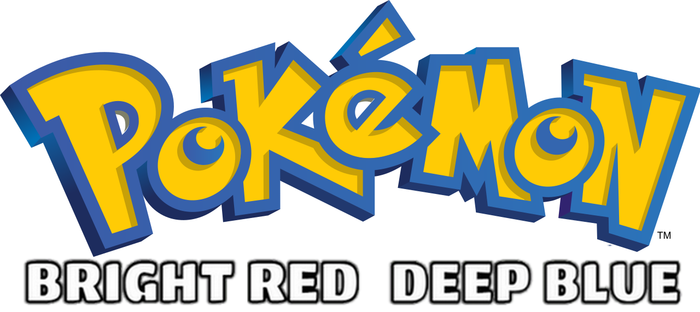

By default, Windows blocks the installation of any application that does not come from the Microsoft Store.
Select Start > Parameters > Applications > Advanced applications settings .
On the first line option Choose where to get applications, choose Anywhere..
Another possibility is that the Smart App Control is enabled.
Select Start > Windows Security > Application and browser control >
Under the first option Smart App Control , click Smart App Control settings.
Choisissez Désactivé.
Finally, your firewall or antivirus software may be blocking the installation. Try disabling them temporarily.
POKéMON BRDB has been created with RPG Maker XP which is from the 2000s. All today's laptops and desktop PCs should be able to run it.
Here is the minimum configuration required at the time:
OS
Microsoft Windows XP/2000/Vista/7/8/10/11
PROCESSOR
800MHz Intel Pentium III equivalent or higher
RAM
128 MB
GRAPHICS
1024x768 video resolution in High Color mode
SOUND
DirectSound-compatible sound card
DISK
500 Mo
POKéMON BRDB can be played on Mac or Linux by using third-party programs like Wine or CrossOver.
Download and install the previous program of your choice.
Right click on the POKéMON BRDB .exe installation file.
Click Open with and choose Wine or CrossOver.
Still with Wine or CrossOver, open the file game.exe located in the folder where you installed the game (by default C:\Program Files (x86)\POKéMON BRIGHT RED & DEEP BLUE).
You can play POKéMON BRDB on Android using the application JoiPlay (to date, there are no methods for playing on IOS).
On the JoiPlay website, download the .apk files for JoiPlay and RPG Maker Plugin.
Install the JoiPlay apk on your Android phone (by default JoiPlay-x.xx.xxx-patreon-release.apk).
Download the POKéMON BRDB game folder to your Android phone and place it where you want it.
On JoiPlay > The sign upper right > Add game > Choose > Select the game.exe file in the game folder you previously placed on your phone.
Follow the indications and fill the name and version (it does not matter).
You can also choose the icon you like for the app. A default icon is present in the game folder.
JoiPlay will offer to extract encrypted files. Choose Extract.
JoiPlay will ask you to download an RTP file. Download it by clicking on Download then on the web page that opened, scroll down and choose RPG Maker XP.> > Download Run Time Package.
On JoiPlay, press now Choose and select the RTP file you downloaded previously.
Quit JoiPlay and install the other .apk file you downloaded (by default RPGMPlugin-x.xx.xx-patreon-release.apk).
Go back to JoiPlay, accept all terms and launch the game.
In some cases, visuals on mobile devices may not look right. Try the following steps to correct the rendering:
Update the RPG Maker plugin from JoiPlay by downloading it via the following link: link
Activate the Optimize Map option in the JoiPlay options.
Thanks to HardXsound for finding this fix.
The game supports controllers. The default buttons on an XBox controller are :
X > Action button
B > Cancel/menu button
Left analog stick > Movements
Both keyboard and gamepad can be configured by pressing F1 while the game is launched.
In the window that opens, you can change the keyboard keys by going to the Keyboard tab, and the controller buttons by going to the Gamepad tab.
The default bindings are :
| Button name | Controller (Name in game window) | Keyboard | Action |
|---|---|---|---|
| A | X (Button 1) | Shift, Z | - |
| B | B (Button 2) | Esc, Num 0, X | Cancel, Menu |
| C | A (Button 3) | Space, Enter, C | Action Button |
| X | Y (Button 4) | A | - |
| Y | LB (Button 5) | S | - |
| Z | RB (Button 6) | D | - |
| L | Back (Button 7) | Q, Page Up | Previous Page |
| R | Start (Button 8) | W, Page Down | Next Page |
If you have any questions about how the game works, go to the game Wiki.
You will find useful info like the modified evolutions, the different battlefields, and so on.
The game can handle up to 3 saves. If you ever wish to start a 4th game, you will be asked to delete one of the 3 others.
You can also delete a save manualy but always make sure you have saves with consecutive numbers starting with 1. You can rename your save files to change their number if necessary.
By default, save files are named saveX.rxdata and can be found at this path C:\Users\xxx\AppData\Local\VirtualStore\Program Files (x86)\POKéMON BRIGHT RED & DEEP BLUE.